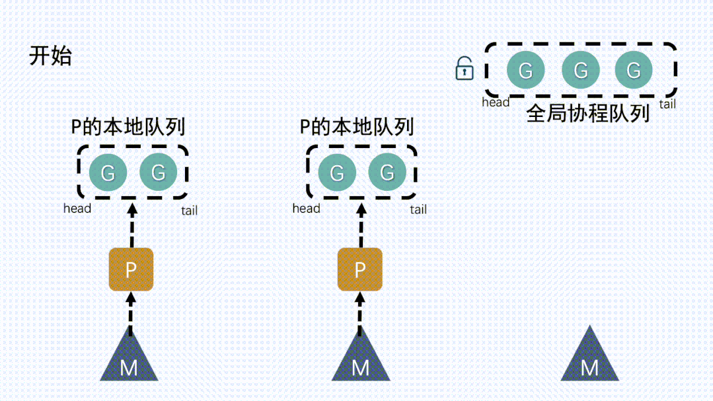
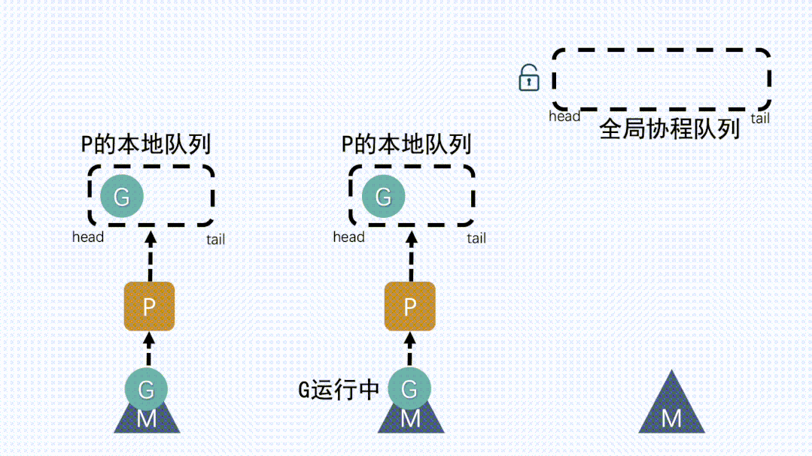

协程调度GRM模型
1. 线程调度
1.1. 早期单线程操作系统
- 一切的软件都是跑在操作系统上，真正用来干活(计算)的是CPU。
- 早期的操作系统每个程序就是一个进程，知道一个程序运行完，才能进行下一个进程，就是“单进程时代”
- 一切的程序只能串行发生。
1.2. 多进程/线程时代
- 在多进程/多线程的操作系统中，就解决了阻塞的问题，因为一个进程阻塞cpu可以立刻切换到其他进程中去执行
- 而且调度cpu的算法可以保证在运行的进程都可以被分配到cpu的运行时间片
- 这样从宏观来看，似乎多个进程是在同时被运行。
- 但新的问题就又出现了，进程拥有太多的资源，进程的创建、切换、销毁，都会占用很长的时间
- CPU虽然利用起来了，但如果
进程过多，CPU有很大的一部分都被用来进行进程调度了 - 大量的进程/线程出现了新的问题
- 高内存占用
- 调度的高消耗CPU
- 进程虚拟内存会占用4GB[32位操作系统], 而线程也要大约4MB
1.3. Go协程goroutine
- Go中，协程被称为goroutine，它非常轻量，一个goroutine只占几KB，并且这几KB就足够goroutine运行完
- 这就能在有限的内存空间内支持大量goroutine，支持了更多的并发
- 虽然一个goroutine的栈只占几KB，但实际是可伸缩的，如果需要更多内容，
runtime会自动为goroutine分配。 - Goroutine特点：
- 占用内存更小（几kb）
- 调度更灵活(runtime调度)
1.4. 协程与线程区别
- 协程跟线程是有区别的，线程由CPU调度是抢占式的
- 协程由用户态调度是协作式的，一个协程让出CPU后，才执行下一个协程
2. 调度器GMP模型
- G：goroutine（协程）
- M：thread（内核线程，不是用户态线程）
- P：processer（调度器）
2.1. GM模型
G（协程），通常在代码里用go关键字执行一个方法，那么就等于起了一个G。M（内核线程），操作系统内核其实看不见G和P，只知道自己在执行一个线程。G和P都是在用户层上的实现。- 并发量小的时候还好，当并发量大了，这把大锁，就成为了性能瓶颈。

- GPM由来
- 基于没有什么是加一个中间层不能解决的思路，
golang在原有的GM模型的基础上加入了一个调度器P - 可以简单理解为是在
G和M中间加了个中间层 - 于是就有了现在的
GMP模型里的P
- 基于没有什么是加一个中间层不能解决的思路，
2.2. GMP模型
3. GPM流程分析
- 我们通过 go func()来创建一个goroutine；
3.1. P本地队列获取G
- M
想要运行G，就得先获取P，然后从P的本地队列获取G

3.2. 本地队列中G移动到全局队列
- 新建
G时，新G会优先加入到P的本地队列； - 如果本地队列满了，则会把本地队列中一半的
G移动到全局队列

3.3. 从其他P本地队列的G放到自己P队列
- 如果全局队列为空时，
M会从其他P的本地队列偷（stealing）一半G放到自己P的本地队列。

3.4. M从P获取下一个G，不断重复
M运行G，G执行之后，M会从P获取下一个G，不断重复下去